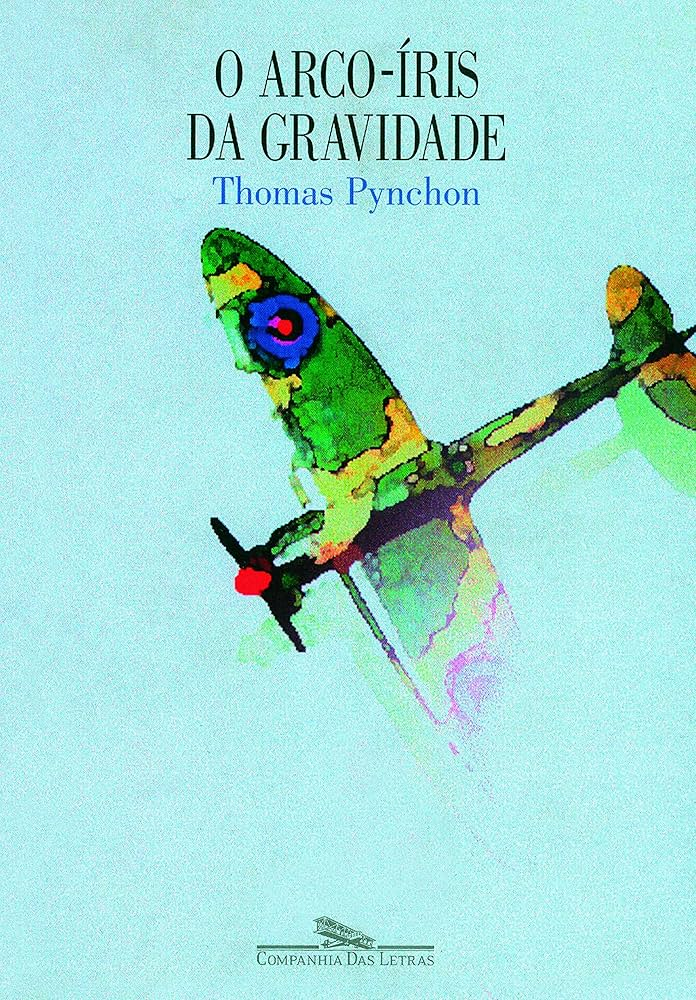
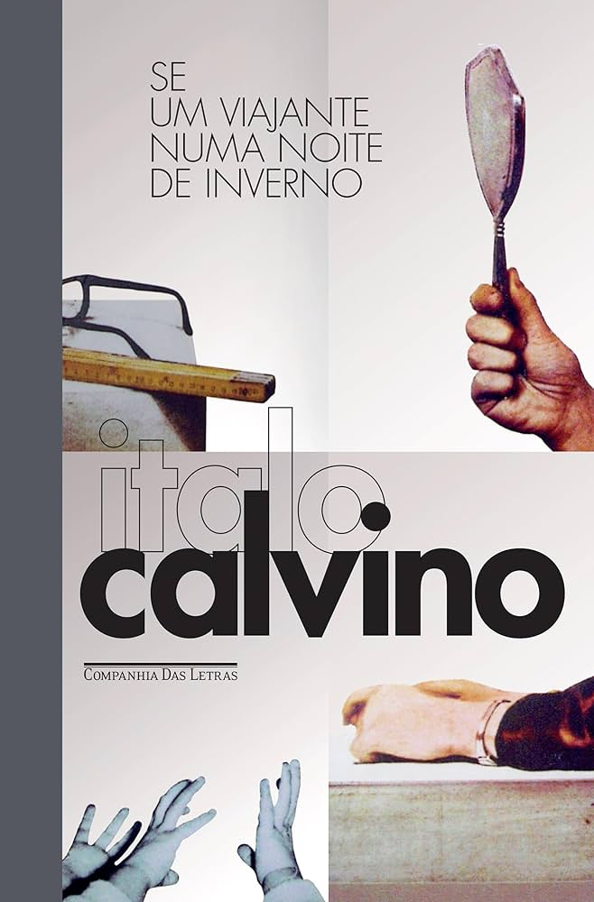
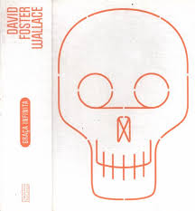

Pós-Modernismo
O Pós-Modernismo é um movimento cultural e estético que surgiu após a Segunda Guerra Mundial, por volta da segunda metade do século XX. Ele representa uma reação às certezas e ideais dos movimentos modernistas, propondo uma visão mais fragmentada, plural e relativista da realidade. O Pós-Modernismo rejeita as narrativas grandiosas e o otimismo racionalista do Modernismo, dando lugar ao ecletismo, à mistura de estilos, à intertextualidade e à descentralização dos discursos.
.
Principais características do Pós-Modernismo
1. Fragmentação e Descentralização: O Pós-Modernismo é marcado pela fragmentação das narrativas, a desconstrução das estruturas tradicionais e a ausência de um único ponto de vista. As obras pós-modernas muitas vezes apresentam múltiplas perspectivas, realidades paralelas e uma estrutura não linear.
.
2. Ecletismo e Intertextualidade: Um traço essencial do Pós-Modernismo é a mistura de estilos, gêneros e referências culturais. O movimento valoriza a intertextualidade, fazendo uso de citações, alusões e referências a outras obras, criando um diálogo entre diferentes formas de arte e épocas.
.
3. Ironia e Paródia: As obras pós-modernas frequentemente utilizam a ironia, o humor e a paródia como formas de desconstruir discursos e questionar verdades absolutas. Essa abordagem satírica é usada para criticar instituições, valores tradicionais e a própria arte.
.
4. Desconfiança em Relação às "Grandes Narrativas": O Pós-Modernismo rejeita as grandes narrativas (ou metanarrativas) que prometem explicar a totalidade da experiência humana, como o progresso, a razão ou a verdade universal. Em vez disso, valoriza as perspectivas locais, pessoais e subjetivas.
.
5. Hiper-realidade e Cultura de Massa: O movimento Pós-Moderno reflete a crescente influência dos meios de comunicação de massa, da publicidade e da cultura de consumo. O conceito de hiper-realidade, proposto por Jean Baudrillard, aponta como a mídia cria uma realidade simulada, em que as fronteiras entre o real e o imaginário se tornam cada vez mais tênues.
.
Contexto histórico
O Pós-Modernismo surgiu em um contexto de mudanças globais após a Segunda Guerra Mundial, quando o otimismo com a modernidade e o progresso começou a ser questionado. A Guerra Fria, as transformações sociais e culturais da década de 1960, o avanço tecnológico e o desenvolvimento das mídias de massa contribuíram para uma visão mais cética e plural da realidade. Esse movimento é caracterizado pela perda de confiança nas instituições, nas verdades absolutas e no ideal de progresso linear.
AUTORES E OBRAS
Thomas Pynchon: "O Arco-Íris da Gravidade"
Don DeLillo: "Ruído Branco"
Italo Calvino: "Se um Viajante numa Noite de Inverno"
David Foster Wallace: "Graça Infinita"
Conclusão
O Pós-Modernismo é um movimento cultural que reflete a complexidade e a pluralidade do mundo contemporâneo. Com sua abordagem fragmentada, irônica e ecletista, ele desafia as certezas do passado e propõe uma nova forma de enxergar a arte e a realidade, mais aberta e questionadora. Embora controverso, o Pós-Modernismo teve uma profunda influência na literatura, na arte, no cinema e na cultura de massa, alterando as formas tradicionais de expressão e questionando o próprio papel da arte no mundo moderno.
O movimento continua a influenciar as discussões culturais e artísticas do século XXI, em um mundo cada vez mais globalizado e interconectado.